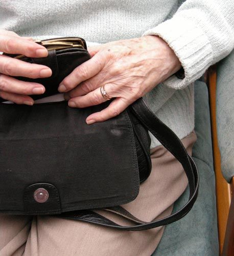

	<div id="oneCol" class="row">
    <div class="large-12 columns">
        <div class="center">
        <a href="ithaca002.html" title="Click for the next image in the ITHACA series of photographs"></a>
        </div>
        <div class="medium-10 medium-offset-1 end columns">
        <h3>ITHACA (2007)</h3>
        <p> commisioned me as both a visiting artist to work in Day Centres with elderly people and to document the work of other artists involved in their SAGE programme. <strong><br />
      The images shown were taken by people who attended a day centre in Wantage, Oxfordshire</strong> and came to 8 weekly meetings to learn more about photography and music as a means of personal expression, Oct-Dec 07.</p>
      <span class="links"><a href="ithaca002.html">next</a></span>
        </div>
     </div>
</div>


